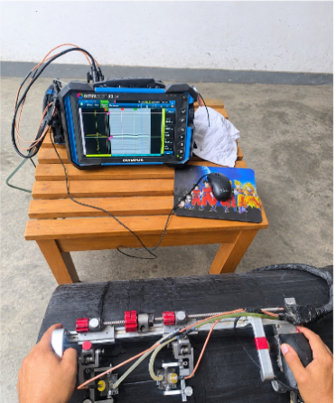
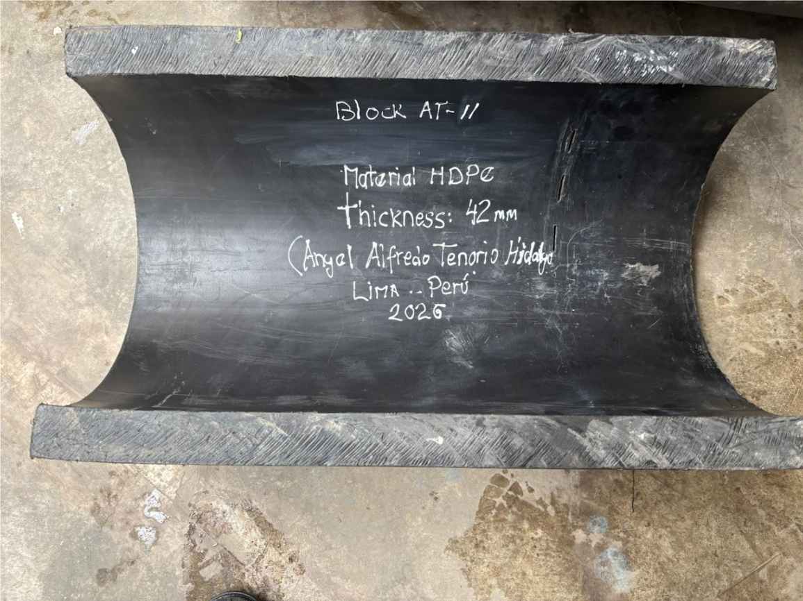
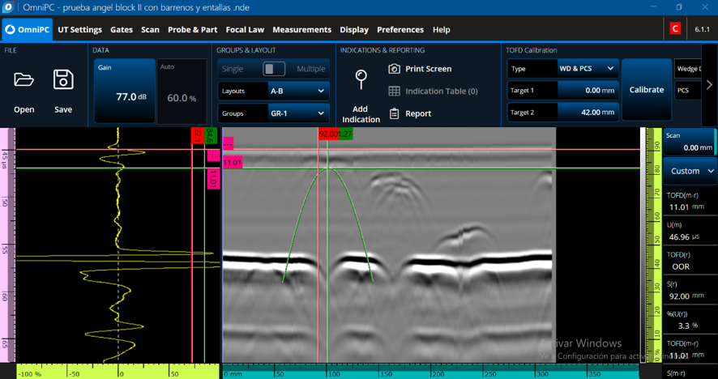

Study of the Propagation, Attenuation, and Diffraction of Ultrasonic Waves in Heat-Fused HDPE Pipe Joints Using the TOFD Ultrasonic Method for Preventive Failure Detection
An ultrasonic testing study that used time-of-flight diffraction to estimate the depths of four artificial reflectors in HDPE. It compares measured depths and signal arrival times with reference values and examines what the results imply for future inspection of heat-fused pipe joints.

Project Overview
The project examines how ultrasonic wave propagation and diffraction can reveal internal discontinuities in high-density polyethylene (HDPE). It focuses on estimating reflector depth from signal travel time. The immediate test used an engineered reference block, providing a basis for further work on preventive inspection of drinking-water pipes.
Research Question
How can time-of-flight diffraction (TOFD) characterize ultrasonic responses in HDPE and help locate internal discontinuities relevant to heat-fused pipe joints?
Hypothesis
The report hypothesizes that propagation, attenuation, and diffraction in HDPE influence TOFD signals and that, under suitable conditions, reference joints and joints with internal discontinuities should yield measurably different responses. The four-reflector series evaluates a preliminary part of that hypothesis using known reflector depths.
Scientific Background
A transmitting probe sends ultrasonic energy into the material and a receiving probe records arrivals. Signals diffracted by a discontinuity carry timing information related to its position. In a symmetric geometry, reflector depth follows from travel time, probe separation, and longitudinal wave speed. HDPE is viscoelastic, so absorption and scattering can reduce signal amplitude as the propagation path grows.
t = (2/v) √[(PCS/2)² + z²] · z = √[(vt/2)² − (PCS/2)²]
Here PCS is probe center separation, v is longitudinal wave velocity, and z is reflector depth. The report represents attenuation with A(x) = A0e−αx. It treats α theoretically. At the reference speed of 2,400 m/s and 2.25 MHz, the modeled wavelength is 1.067 mm.
Methodology
- Check the OmniScan MX3 instrument and JIREH scanner on the AT-I calibration block. Use two nominal 2.25 MHz probes and a fixed separation of 110.5 mm for the AT-II series.
- Scan the 42 mm AT-II block using the same nominal setup for three planar reflectors at 11, 25, and 35 mm and a 2 mm hole at 20 mm. The report documents ten scans per reflector, for 40 measurements.
- Compare reported mean depths and signal travel times with nominal dimensions and the symmetric model. Assess repeatability using the reported standard deviations and interpret coupling, positioning, and surface conditions as sources of variability.
- Inspect the AT-III heat-fused specimen as a separate check. The report describes the observed scan response within the test coverage and sensitivity.
Experimental Work




Key Results
| Reflector | Nominal (mm) | Mean (mm) | Error (mm) | SD (mm) |
|---|---|---|---|---|
| Planar at 11 mm | 11.00 | 11.053 | +0.053 | 0.066 |
| Planar at 25 mm | 25.00 | 25.055 | +0.055 | 0.053 |
| Planar at 35 mm | 35.00 | 35.023 | +0.023 | 0.065 |
| Hole at 20 mm | 20.00 | 20.047 | +0.047 | 0.090 |
Across the four means, the reported unweighted mean absolute depth error was 0.0445 mm and the mean relative error was approximately 0.251%. The reported mean travel times exceeded the modeled times by 0.022–0.033 μs.
Discussion
The agreement between nominal and estimated depths supports the use of diffracted arrival times to locate the known reflectors in this setup. Small scatter describes repeatability within the reported series. In the separate AT-III scan, the report identified no indications attributable to internal discontinuities within the sensitivity and coverage of the test.
Conclusion
The study provides preliminary evidence that TOFD can locate artificial reflectors in HDPE under the reported conditions. Representative joints and defects are the next step for evaluating preventive inspection applications.
Limitations
The quantitative depth results apply to one reference block and four artificial reflectors. The report calls for checking the original 40 readings and documenting time zero, wedge delays, measurement uncertainty, and calibration traceability. It did not determine the attenuation coefficient experimentally or estimate probability of detection, and calls for testing other joint geometries and representative defects.
Skills Demonstrated
Project Links
English and Spanish PDFs will be available after publication on Zenodo.
Cite as: Tenorio Hidalgo, A. A. (2026, July). Study of the Propagation, Attenuation, and Diffraction of Ultrasonic Waves in Heat-Fused HDPE Pipe Joints Using the TOFD Ultrasonic Method for Preventive Failure Detection [Independent research report]. Lima, Peru.